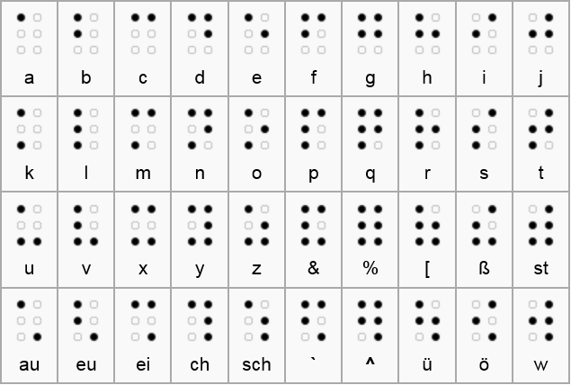

Blindenschrift
Die Blindenschriften sind für blinde Menschen lesbare Schrift. Es gibt viele unterschiedliche Blindenschriften, deswegen wird im Folgenden auf die weitverbreitete und auch in Deutschland verwendete Brailleschrift verwendet, welche von Louis Braille, im Englischen und Französischen bezeichnet sein Nachname kleingeschrieben "braille" die Blindenschrift, erfunden wurde. Diese lässt sich nochmals allein in Deutschland in mehrere Unterarten aufteilen, da es für jede Sprache besondere Zeichen gibt. Im Deutschen wären dies Ä, ä, Ü, ü, Ö, ö und ß. In der Basisschrift gilt, dass ein Zeichen, welchen im Normalfall aus 6 Punkten in einem 2 Punkte breiten und 3 Punkte hohen Raster angeordnet ist, da es somit 2^6 = 64 Möglichkeiten gibt, gleich einen Kleinbuchstaben entspricht. Großbuchstaben, Ziffern und Akzentbuchstaben, also im Deutschen die Umlaute, werden mit bestimmten vorangestellten Zeichen gebildet. Alle anderen Unterarten der Brailleschrift haben den Sinn sie kürzer zu machen und somit das Lesen schneller zu machen. Bei der Vollschrift werden im Deutschen au, äu, eu, ei, ie, ch, sch und st jeweils in nur einem Zeichen dargestellt um die Texte zu verkürzen. Die Kurzschrift kürzt häufig verwendete Wörter, wie zum Beispiel und, welches zu u wird. Die Blindenstenografie verkürzt ganze Wörter, da man Wortsilben in maximal 2 Zeichen darstellt, wie beispielsweise Präfixe, wie ex werden zu x, aber auch Suffixe, wie istisch werden zu ~sch, hierbei ist sch ein eigenes Zeichen. Dadurch entstehen Dopplungen bei der Zeichenbelegung. Dies führt wiederum zu einem Regelwerk, welches vorgibt, wann welches Zeichen was bedeutet. Somit kann das Zeichen für x nur am Anfang eines Wortes ex bedeuten. Aus diesem Grund wird die Vollschrift als Beispiel im Folgenden verwendet.

https://kryptografie.de/kryptografie/chiffre/images/braille.png
~ Fabian